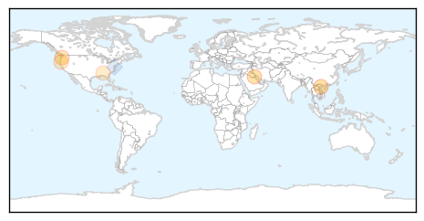
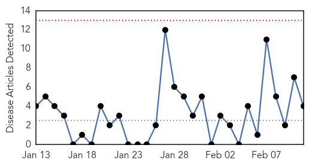
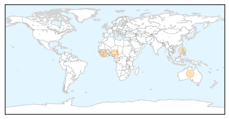

Swine Flu
30-Day Web Trend
0 alerts, 0 warnings

30-Day Twitter Trend
3 alerts, 0 warnings

Article Locations
Article Confidences

Top Articles:
- 0.999
- Cases of H1N1 detected in Malaysia, Singapore, Thailand and Vietnam
- 0.992
- Fear Of Swine Flu Returns In Kuwait
- 0.952
- 'A Major Decline' Reported in Local Flu Cases
- 0.874
- Adult H1N1 flu patient from Winlock in medically-induced coma
- 0.732
- Grants Pass woman fighting H1N1 flu dies at Portland hospital
- 0.615
- H1N1 Downs Oakdale Man Out Of State
Top Tweets:
- 0.512
- Flu activity in the U.S. remains high overall and may continue for weeks. H1N1 viruses have been dominant so far. StayintheGame
Measles
30-Day Web Trend
0 alerts, 0 warnings

30-Day Twitter Trend
0 alerts, 0 warnings

Article Locations
Article Confidences
Top Articles:
Top Tweets:
-
No tweets found for Feb 11, 2014